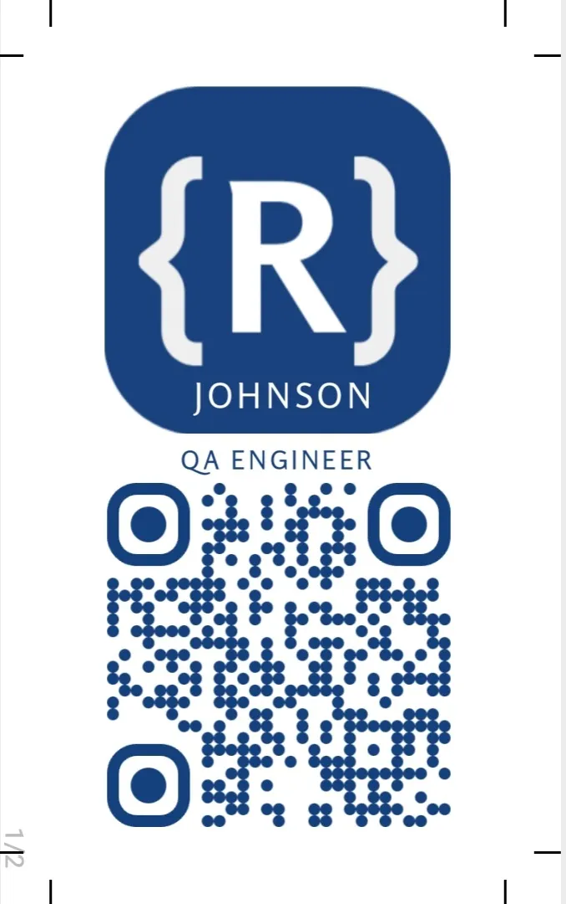
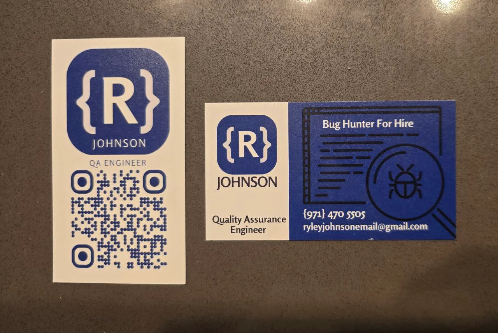

[R] Johnson
QA Engineer · Bug Hunter
Yes, that’s really me—but I used AI to give myself more hair on top and a suit. I don’t even own a suit.
QA Engineer · Bug Hunter
Yes, that’s really me—but I used AI to give myself more hair on top and a suit. I don’t even own a suit.
I designed these business cards to highlight my work as a QA engineer and bug hunter. I used the code brackets around the “R” to give it a programming vibe, and stuck with a clean blue color scheme for a professional look. The QR code leads straight to my portfolio (Beacons landing page), so it’s super convenient at networking events—people can just scan it to learn more about what I do.
→ My Beacons landing page (scan the QR)Card face · Screenshot

In hand · Front & back

I created this long horizontal banner in Gen AI for my LinkedIn profile—same blue, code-bracket vibe so my personal brand stays consistent across print and digital.

My personal QA portfolio at mrjohn5on.github.io is fully designed and built by me—no template. I vibe-coded the whole thing to showcase my path from retired firefighter to QA engineer (TripleTen bootcamp, internships at Supernova MGU and Everykey, plus Testlio and Uber), my skills (Playwright, TypeScript, Postman, API testing, and more), and a full projects section—from E2E ride-booking tests to mobile beta testing and automation work. There’s a clean contact block for recruiters and hiring managers, and the footer even shouts out Life of Logos. One site, one vibe.
Visit my QA portfolio →